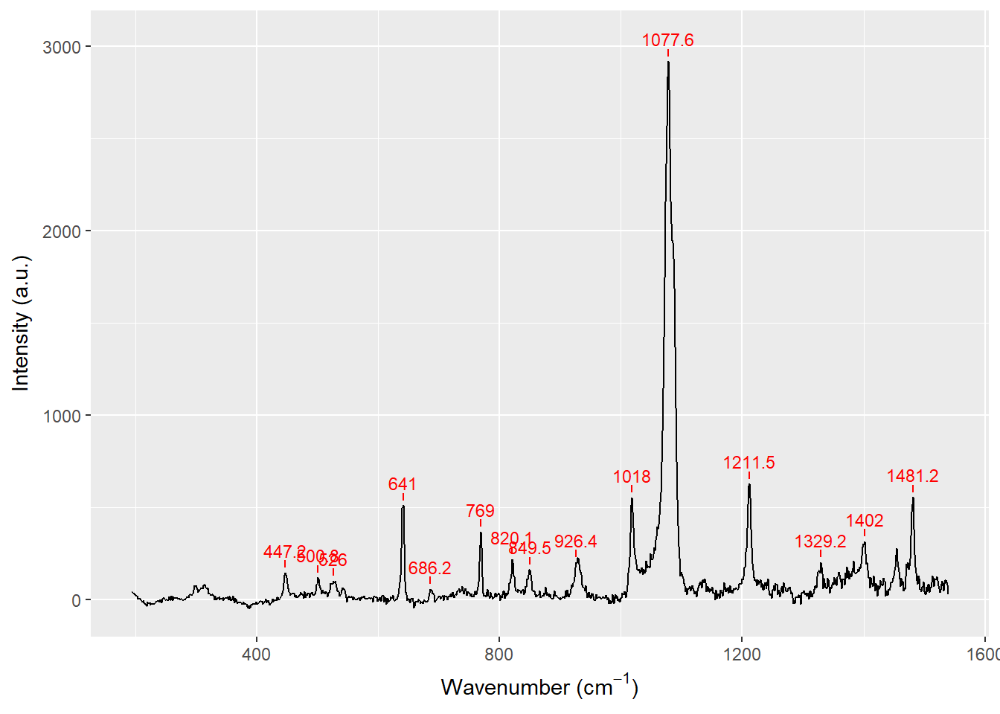

5 Interactive analysis tools
5.1 Peak picking
As of osctools v0.0.2 a shinyGadget for peak-picking in any dataset was introduced. There are many algoritms for automatic peak detection in datasets, but they are usually difficult to generalise over e.g. many spectra. The peak_picker() shinyGadget displays a given dataset from a set of x- and y-coordinates and allows you to select peaks by clicking. It will automatically try to determine the nearest peak when selecting a point in the dataset (unless disabled by setting find_nearest = FALSE).
To demonstrate the functionality we have a Raman spectrum of a diazonium salt loaded in a tibble.
library(tidyverse)
print(raman_spectrum, n = 5)## # A tibble: 1,015 x 2
## wavenumber int_mean
## <dbl> <dbl>
## 1 193.7 40.5
## 2 195.1 41.4
## 3 196.6 34.7
## 4 198.1 34.0
## 5 199.5 31.3
## # ... with 1,010 more rowsThe peak_picker() can be launched from RStudio by supplying a tibble with data, and specifying the x- and y-columns.
library(osctools)
peak_picker(raman_spectrum, wavenumber, int_mean)After pressing Done, the results will be output to the console. A piece of code is also shown, and is automatically copied to your clipboard. You should paste this into your code, in order to ensure reproducibility the next time you run the code.
15 peaks found in the dataset
The add_peaks() function below has been copied to the clipboard!
Please paste it in your script for reproducibility.
raman_spectrum <- raman_spectrum %>% add_peaks(c(177,215,233,316,349,410,448,470,528,598,644,749,843,902,967))Using the code output, it is easy to later reproduce the plot from the gadget using the plot_peaks() function. It returns a ggplot2 object, so we can easily add more layers to the plot.
raman_spectrum %>%
add_peaks(c(177,215,233,316,349,410,448,470,528,598,644,749,843,902,967)) %>%
plot_peaks(wavenumber, int_mean) +
labs(x = expression(paste("Wavenumber (", cm^-1,")")), y = "Intensity (a.u.)")